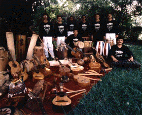

HOME FUNDEF
ODILA
ODILA
|  |
Ejemplo de Música:
Fragmento de la pieza "El Azote" de Jesús Bosque, grabado en el más reciente CD de ODILA "Magia y Realidad."
La ODILA se crea en 1982 en Caracas por conjunción de recursos y
necesidades de dos instituciones y una persona: 1) El Instituto Interamericano
de Etnomusicología y Folklore (INIDEF), con su directora Isabel Aretz,
2) La Fundación Orquesta Nacional Juvenil (ONJV), con su director
José Antonio Abreu, y 3) El compositor Dr. Emilio Mendoza. La compositora y
etnomusicóloga Isabel Aretz, que ha mantenido un vínculo estrecho
entre su conocimiento etnomusicológico y su producción musical
creativa, idea dicha orquesta como un proyecto para las celebraciones del
bicentenario del natalicio de Simón Bolívar en 1983 en conjunto
con José Antonio Abreu.
Se logra una intensa actividad de conciertos nacionales e internacionales, grabaciones de audio y video, apariciones en televisión, cursos de ejecución de instrumentos y de composición.
En 1987 Mendoza se dirige a los Estados Unidos para realizar estudios de
doctorado, y la orquesta continúa con gran éxito con personalidad
jurídica autónoma, bajo la dirección del organólogo Israel Girón, músico de origen salvadoreño graduado en el Conservatório Nacional de su país y de gran experiencia en el área. La ODILA se nutre de la creatividad de sus integrantes, un equipo interdisciplinario de profesionales dedicados a la interpretación, investigación y docencia, músicos de gran versatilidad, capaces de ejecutar cualquiera de los instrumentos que conforman la colección organológica de FUNDEF, institución sede de la orquesta. El repertorio contempóraneo actual se debe, en su mayoría, al Director Musical de la ODILA, Jesús Bosque. ODILA es el principal canal de difusión de la riqueza de las
colecciónes que se conservan en su sede. Bajo los auspicios del CCPYT y la OEA producen en 1988 el LP
``De lo Tradicional a lo Contemporáneo.'' En 1995 auto-producen su primer disco compacto ``Magia y Realidad,'' y el Video-clip ``El
Azote''. Preparan para 1996 un disco compacto dedicado al Caribe denominado
``Pulso y Clave''.
La ODILA utiliza un instrumental propio, que abarca toda Latinoamérica, con el soporte bibliográfico, de grabaciones en audio y video, y fotografías que el Instituto ha recopilado en sus misiones de investigación por el continente. La intención de la Orquesta es ofrecer al compositor una base instrumental alternativa a los instrumentos sinfónicos europeos. Al aproximarse a este instrumental, el creador necesita un cambio de pensamiento, se cuestiona todo su conocimiento y preparación académica, da inicio a un acercamiento serio hacia las culturas de tradición oral que, con poca excepciones, es inexistente en la formación del compositor actual. La ideología de la ODILA no rechaza la cultura europea, considerando posible mezclarse al igual que el folklore mismo lo hace, con cualquier aporte cultural. La ODILA desea colocar este acervo musical menospreciado, como recurso indispensable para el desarrollo musical del artísta que se identifique con este continente, despertar un interés por esta expresión musical latinoamericana para que se desarrolle una nueva corriente de creación musical basada en nuestra generosa y milenaria cultura.
En sus conciertos la ODILA presenta los instrumentos con su música tradicional, desde la indígena, africana y europea, culturas que dan origen a nuestro rico folklore, hasta las nuevas composiciones musicales escritas para la orquesta destacando sus principales características instrumentales.